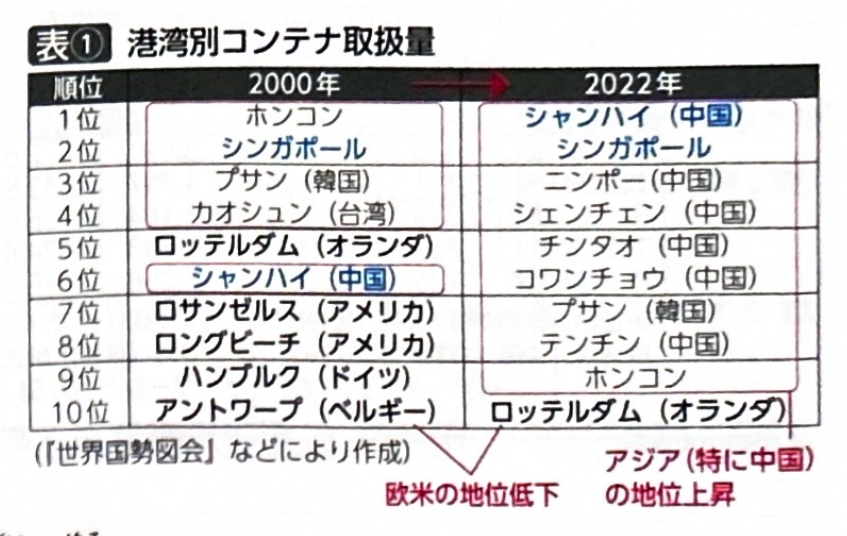
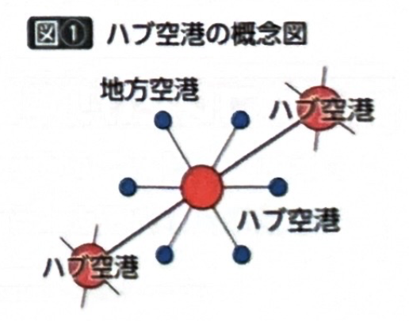
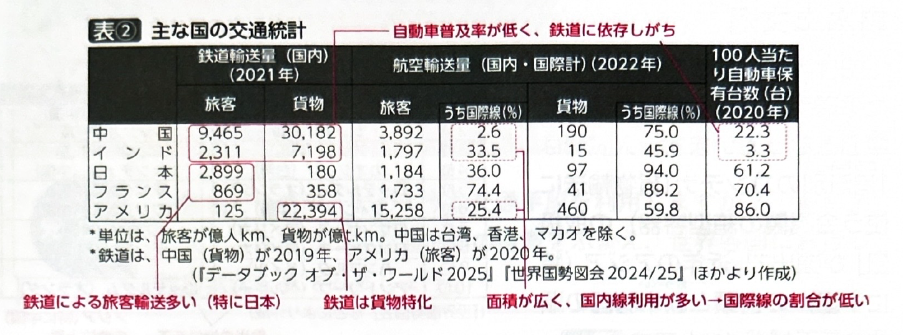
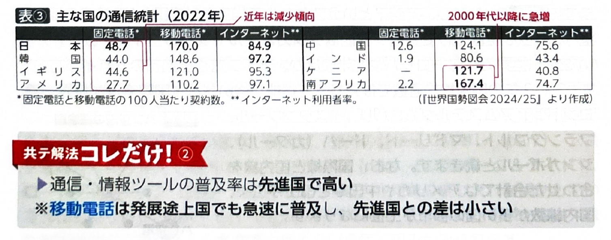

第8章 商業・観光、交通、貿易 - 交通・通信
ポイント総復習
1. 陸上交通（鉄道と自動車）
国土の広さや経済発展の度合いによって、交通機関の役割は大きく異なります。
| 交通機関 | 国・地域のタイプ | 特徴と役割 |
|---|---|---|
| 鉄道 | 日本・ヨーロッパ （面積狭・人口密度高） |
都市部を中心に鉄道網が密。旅客輸送が中心（新幹線など）。 |
| アメリカ・オーストラリア （面積広） |
旅客は自動車や航空機が中心のため、鉄道は穀物や鉱石の長距離輸送など、貨物輸送に特化（大陸横断鉄道など）。 | |
| 中国・インド （発展途上国） |
自動車の普及率がまだ低いため、鉄道への依存度が高く、旅客・貨物ともに多い。 | |
| 自動車 | 自動車普及率 | 先進国で高く、発展途上国で低い。 ※日本国内では、代替交通（電車等）が発達した大都市ほど低く、郊外や地方圏で高い。 |
| 環境問題と対策 | 排気ガス問題などに対し、EVの普及や、郊外に駐車して公共交通に乗り換えるパーク＆ライド、市街地への課金（ロードプライシング）、LRT（路面電車）の導入などが進む。 |
2. 水上交通と航空交通
国際間の移動や物流において、船舶と航空機はそれぞれ異なる役割を担っています。
- 水上交通（船舶）：
- 大量・重量物輸送に適し、国際貨物輸送の中心。
- コンテナ取扱量のランキングでは、近年アジア（特に中国）の港湾（シャンハイ、ニンポーなど）が上位を独占し、欧米の地位が低下しています。シンガポールやプサン（韓国）も上位です。
- 内陸水路：ライン川、ドナウ川、ミシシッピ川、五大湖などで発達。※アフリカは地形的に急流が多く、河川航行が不可能な場所が多い。
- 航空交通：
- 高速性に優れ、国際旅客輸送の中心。LCC（格安航空会社）の普及により途上国でも利用が増加。
- 国土面積が広い国（アメリカ、中国など）は国内線の割合が高い。国土面積が狭い国（シンガポールなど）は国際線の割合が高い。
- 航空貨物：IC（半導体）や精密機械などの軽薄短小で付加価値の高い製品や、花卉（かき）・生鮮食品の輸送に適しています。
- ハブ空港：主要路線と地方路線を中継する拠点空港。インチョン（韓国）、シンガポール、乗り継ぎ機能世界一のドバイ（UAE）などが有名です。



3. 通信
- 通信・情報ツールの普及率は、基本的に先進国で高い傾向があります。
- 固定電話から移動電話（スマホなど）への移行：移動電話は電波基地局の設置により無線で通信でき、有線に比べて導入が容易なため、アフリカなどの発展途上国でも急増しています。そのため、移動電話に関しては先進国と途上国の普及率の差が小さくなっています。
- インターネット普及率：先進国で高く、特に国策でIT化を推進した韓国は非常に高い水準にあります。
- デジタルデバイド（情報格差）：通信インフラや情報機器の有無、利用能力の差によって生じる、国・地域間や個人間の格差が問題となっています。

基礎問題（理解度チェック）
Q1. 陸上交通の特徴について、空欄を埋めなさい。
アメリカやオーストラリアなどの国土が広い国では、鉄道は主に穀物や鉱石などの
に特化している。一方、中国やインドなどの発展途上国では自動車普及率が低いため、
への依存度が高い。また、自動車の環境対策として、郊外の駐車場に車を停めて公共交通機関に乗り換えるシステムを
という。
Q2. 水上交通と航空交通について、空欄を埋めなさい。
港湾別のコンテナ取扱量をみると、近年は
の港湾が上位を占めている。航空交通による貨物輸送は、IC（半導体）などの
な製品や生鮮品の輸送に適している。また、航空路線の中継拠点となる空港を
といい、中東のドバイなどが有名である。
Q3. 通信について、空欄を埋めなさい。
通信手段のうち、スマホなどの
は、インフラ整備が比較的容易であるため、アフリカなどの発展途上国でも急速に普及している。一方で、情報通信技術（IT）を利用できる人とできない人との間に生じる情報格差を
といい、新たな問題となっている。
Q4. アメリカやオーストラリアのような国土面積が広い国では、鉄道は主に穀物や鉱石などの資源を運ぶ貨物輸送に特化しており、旅客輸送における鉄道の役割は日本に比べて小さい。
Q5. 航空交通において、国土面積が狭いシンガポールのような国では、国内を飛行機で移動する必要性が高いため、国際線よりも国内線の旅客割合の方が高くなる。